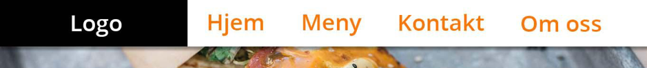
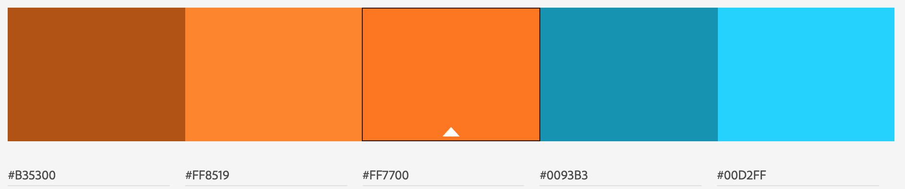
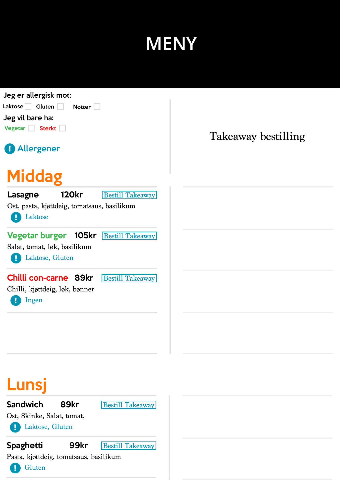
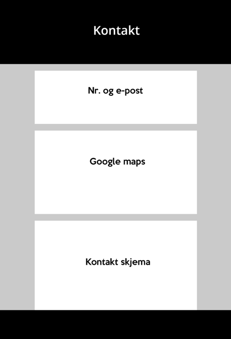

Administrative Details
Klient: Morten Butangen
Klienten vår, Morten Butangen, ønsker å promotere og ta bestillinger til sin nye restaurant “Sampiseriet”. Restaurantens målgruppe er hovedsakelig studenter og folk i alle aldre som ønsker seg en rask og rimelig matbit. Mortens drivkraft er å lage et hyggelig og behagelig møtested i en stressende hverdag, hvor man kan møtes og spise et godt måltid for en billig penge. Grunnet alderssammensetningen hos målgruppen, samt behovet for å få restauranten til å øke inntjeningen til et bærekraftig nivå så raskt som mulig, har Morten bestemt seg for å lage en nettside for å promotere restauranten og ta imot bestillinger og andre henvendelser fra kunder.
Purpose, goals, and audience
Klienten ønsker at nettsiden skal fungere som en informasjonskilde, hvor kunder kan finne åpningstider, stedsinformasjon og kontaktinformasjon, men også et innbydende innblikk i restauranten, som skal friste besøkende til å prøve restauranten. Nettsiden bør være strukturert og estetisk innbydende, med lett tilgjengelig meny og bilder av restauranten. Klienten ønsker også funksjoner som gjør at man kan bestille bord, bestille mat på forhånd (takeaway) og et kontaktskjema for tilbakemelding. På grunn av den antatt unge kundebasen, ønsker han en nettside som egner seg spesielt godt på mobiler. Derfor bør den også være oversiktelig og rask også på små enheter.
Navigation Structure
Websiden skal være slik at alle sider kan nås uansett hvilken side man er på. Dette gjøres gjennom å velge side fra navigasjonsmenyen. Formålet er å gjøre det enklere og raskere for brukeren å komme dit man ønsker, og utføre de handlingene h*n ønsker så raskt og problemfritt som mulig. Det skal være lett for brukeren å forstå sidens struktur med en gang en kommer inn på hovedsiden. Vi vil bruke en nokså standard menyoversikt for å oppnå dette.

Page Layout and Appearance
Header
Her ønskes en navigasjonsmeny helt øverst hvor en logo også er plassert. Denne menyen vil på desktop ta mellom 10-15% av høyden og fulle bredden til siden. Menyen er plassert øverst fordi den da er lett tilgjengelig, og fordi det er for de alle fleste der man forventer den er.
Kort fortalt om menyen:
- Logo vil plasseres helt til høyre - 15 % width
- Meny-elementer til venstre - resterende width, 85%
- Hvert element vil ta 25 % width av menyen.
“Knappene” til menyen:

- Viser hvilken side brukeren er i på det tidspunktet
- Når brukeren ikke interagerer med knappen
- Når brukeren har musepekeren over knappen
På en mobilversjon vil valgene i menyen skjules, og erstattes med et responsivt symbol (tre horisontale streker) som utvider navigasjonsmenyen fra toppen og nedover. Symbolet endres til et kryss, som ved trykk trekker menyen sammen igjen, og tilstanden for siden går tilbake til standard.
Main
All “content” unntatt i meny.html vil ha en bredde på rundt 70%. Dette må sees an litt. Det vil altså være en liten bredde (margin) på hver side av content. Navigasjonsbar, footer og bakgrunn vil ha full bredde. Meny.html vil ha nesten full bredde på grunn av “meny” formatet
Footer

Footern skal stå nederst på browser-vinduet, eller nederst på siden (under content) dersom den blir dyttet lengre ned. Denne tar hele bredden, 100%. Footern skal være ~10% av høyden og inneholde telefonnummer, email, adresse, og navnet til restauranten. Fargevalget vil være en mørk grå eller svart, med hvit tekst for kontrast og bedre leselighet. Den mørke fargen er for å symbolisere at det er slutt her, og for å samtidig være nøytral nok for å ikke lokke brukerens øyner vekk fra content på siden.
Fonter
Titler, overskrifter og viktig tekst
Keep Calm - hoved font (Dafont)
En fin font å bruke i tekst som skal vises godt. Den er ikke så versatil på grunn av
at den bare har en variant. I slik type tekst har dette lite å si.
Arial (Bold) - reserve font (Standard)
En font som alle kjenner til og som ligner en del på Keep Calm. Bold versjonen av
fonten er også veldig synlig og passer godt til Overskrifts-tekst
Brødtekst
Roboto slab - hoved font (Google fonts)
En enkel font som er en god font å lese som brødtekst. Den har 4 forskjellige
varianter: thin, light, regular og bold. Denne variasjonen er veldig grei å ha.
Siden denne er i google fonts kan den linkes opp til nettsiden med en linje kode i
<head>. Den bør også være plassert i en mappe i nettside strukturen i tilfelle en
feil med google fonts oppstår.
Georgia - reserve font (Standard)
Vi velger Garamond som en reserve font for brødtekst, fordi det er en font som er
lett å lese og er font som alle bør ha på sin pc.
Fargevalg
- Tekst: svart
- Bakgrunn: hvit og lysegrå (med bilder over)
- Lenker: lys oransje (se fargepalett)
- Hovedmeny: hvit m/grå skygge
Fargepalett
Alle fargevalg er begrunnet for å lage en brukervennlig og fin side. Vi ønsker ikke å “tukle” for mye med standarden da det viktigste for brukeren er at den forstår strukturen. Fargepaletten vil være gjengående for å fremme restaurantens ramme.
Content
For alle sider vil navigasjonsbaren og footeren være lik og gjeldende. Hvordan det skal se ut og hvorfor er beskrevet i punkt 5.
Index
Under menyen vil det være en video eller et slideshow som har bilder fra restauranten eller matretter. Denne “containeren” vil være noe gjennomsiktig, ettersom det også vil presenteres kort og viktig informasjon om Samspiseriet, blant annet restaurantens åpningstider. Videre nedover med scroll ønskes det tre-fire containere med informasjon/nyheter. Hver container inneholder tekst med et tilhørende bilde.
Det blir brukt bilde/video som tar stor plass for å gi et godt førsteinntrykk av restauranten. Det aller viktigste av informasjon vil også få plass her, da det er ønskelig at kunden ikke skal trenge å lete etter denne informasjonen. Videre gir det forhåpentligvis et positivt inntrykk av restauranten ved å vise frem litt koselige og aktuelle nyheter. Her er det da tenkt markedsføring og nyheter for restauranten (kåringer ol.) og de ansatte.

Meny
Øverst vil som vanlig navigasjonsmenyen ligge. Rett under vil det være knapper som sorterer det øvrige innholdet etter allergier (gluten, vegan, laktose). Man kan markere flere allergener om ønsket. Det øvrige innholdet vil være en meny. Det er tenkt at menyen skal ha et utseende slik et bilde er plassert øverst horisontalt, og deretter en tosidig meny hvor navnet på retten skal stå, pris, allergener og en kort beskrivelse. Det skal i tillegg være en bestill-knapp ved hver matrett hvor man kan legge den til i en handlekurv, og antall porsjoner. Handlekurven skal huske hvilke retter som er lagt til i tillegg til at den kan vise prisen. Slik vil menyen gå igjen nedover, helt til det ikke er flere retter å vise frem. Nederst vil footeren ligge.
Noe av det viktigste med siden er å gi kunden valg og oversikt over hva Samspiseriet kan tilby. Et allergivalg gjør det enkelt for de som behøver det å få en oversikt over hvilke retter som passer for dem. Menyen er utformet for å få kunden til å ha lyst og besøke Samspiseriet, uten at kunden måtte trenge å anstrenge seg for å finne ut hvilke muligheter Samspiseriet tilbyr. Bilder er tilgjengelig for samme grunn. Muligheten for takeaway (handlekurven) vil være en viktig del av Samspiseriets omsetning, og det er derfor viktig at den gjøres lett tilgjengelig og oversiktlig.
På en mobilversjon vil det da ikke være en tosidig meny, men heller en ensidig hvor man i likhet med desktop-versjonen kan scrolle nedover. Menyen vil også vises som beskrevet i header.
Kontakt oss
Både navigasjonsmeny og footer vil være som vanlig, både på en mobilversjon og desktop versjon.
Sidens innhold vil være et kontaktskjema. Kontaktskjemaet skal være sentrert i midten, og ellers vil siden ha lite innhold. Skjemaet vil ha input-felt for navn, mobilnummer, e-mail og en fritekst, i tillegg til en submit-button for send som oppretter en falsk e-post. Det vil også være ønskelig at man kan velge mellom å sende det til webmaster og/eller restauranteier. Det vil være et minimum at enten mobil eller email skal utfylles, og at friteksten skal ha minimum 10 tegn. Alle input-feltene vil ha lik bredde for best mulig design. Dersom mulig vil vi implementere en bot validator/cache?. Et kart hentet fra google maps vil også være en del av sidens innhold.
Et kontaktskjema er måten Samspiseriet vil få tilbakemeldinger og spørsmål fra brukere. Dersom spørsmålene er spesifikt rettet mot webmaster vil det være mulighet for å sende det direkte dit. Ettersom siden ikke har noe mer nytteverdi enn å sende inn spørsmål eller tilbakemeldinger, er det ikke nødvendig å implementere flere funksjoner. Kartet er kun tilgjengelig fordi brukeren kanskje ville trengt det, og det finnes mer enn nok plass for det. For å unngå helt unødvendige meldinger vil det være visse minimumskrav som beskrevet over. Det er viktig at skjemaet er så enkelt som mulig, da Samspiseriet gjerne ønsker tilbakemelding.
For mobilversjonen vil det være likt. Det presiseres at det skal se bra ut og at tastaturet gjerne skal tilpasses det aktuelle input-feltet. Altså, at for mobilnummer skal det være en numpad, og for e-post vil man ha “e-post vennlig tastatur” (alfakrøll tilgjengelig).
Om oss
Navigasjonsmeny og footer som vanlig. På denne siden ønsker restauranteier Morten Butangen å skrive litt om sin historie og hans restaurant, og hva deres visjon og formål er. Det vil være en svært enkel side som ikke innehoder mer enn teksten og et par-tre bilder.
Bordreservasjon
Navigasjonsmeny og footer som vanlig. Samspiseriet har etterspurt om en side som kan håndtere bordreservasjon. Det vil da si en slags bestilling hvor bruker kan oppgi antall og tidspunkt, og muligens også ønsket bord via et kart. Ettersom restauranten er i startfasen vil ikke eier Morten Butangen prioritere dette, men heller ha det som et fremtidig mål dersom tid og ressurser strekker til.
Minimum Requirements
Lik header på alle sidene- Dette er løst ved å ha HTML-koden til headeren blir lagret i en JS-fil som linkes til hver av sidene. Når siden lastes inn, vil JS-koden legge til headeren sin data til HTML-siden som vises på skjermen.
- Footer skal også være lik over alle sidene, men skal være på bunnen av siden om mulig, og ellers være på bunnen av content dersom den blir dyttet utenfor browser-vinduet
- Vi skal kunne sortere retter etter allergener. Brukeren vil se en rekke checkbokser som er navngitt med forskjellige allergener, og vil kunne krysse av hva de ikke ønsker å se. JS-filen vil ha info om hvilke retter som inneholder hvilke allergener, og gjemme de som brukeren ikke ønsker å se
- Brukeren skal kunne legge til forskjellige retter i en handlekurv for takeaway-bestilling. Dette kan løses ved hjelp av cookies som holder styr på hva brukeren har puttet i handlekurven sin. Skal vise både pris og hvilke retter som er lagt til, og ha mulighet til å slette.
- Brukeren skal kunne kontakte webmaster/restauranten for å komme med nyttig informasjon, eller stille spørsmål. En submit-form funker bra for dette, med textboxer for telefonnummer, email, meldingen de ønsker å sende, og noen radiobuttons om de ønsker å sende til webmaster/restauranten.
- På hovedsiden av restauranten ønsker klienten vår å vise en slideshow av de mest populære rettene. En slik slideshow er lett lage ved å laste inn og ut bilder, og blende de under transition. Dette skal droppes dersom brukeren er på mobil, for å spare data.
- Dersom JS filen legger merke til at brukeren er på mobil, vil den kutte bort unødvendige bilder. Nødvendige bilder vil da også bli vist i en lavere oppløsning.